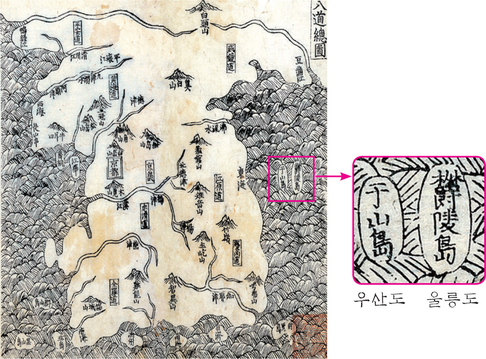

오랜 문화적 배경을 가지고 있는 독도의 역사를 소개해 드립니다.
대한민국의 아름다운 섬, 독도

고대와 중세 시대
삼국시대: 독도는 신라의 장군 이사부가 우산국을 정복한 512년부터 신라의 영토로 편입되었습니다. 당시 우산국은 오늘날의 울릉도와 독도를 포함한 지역으로, 독도는 우산국의 일부로 인식되었습니다.
고려시대: 고려시대에도 독도는 울릉도와 함께 고려의 영토로 인식되었습니다. 고려사 등의 역사 문헌에 독도에 대한 언급이 있으며, 고려는 독도를 포함한 동해의 섬들을 체계적으로 관리했습니다.
조선시대: 조선시대에 들어서면서 독도는 울릉도와 함께 조선의 영토로 명확히 관리되었습니다. 조선 정부는 울릉도와 독도에 대한 조사를 주기적으로 실시하고, 독도와 관련된 다양한 기록들을 남겼습니다. 예를 들어, 《세종실록지리지》(1454년)와 《신증동국여지승람》(1531년) 등에서 독도가 조선의 영토임을 명확히 하고 있습니다.

현대와 독도 문제
영유권 분쟁: 일본은 여전히 독도에 대해 영유권을 주장하고 있으며, 이로 인해 한국과 일본 간에 독도 문제는 주요한 외교적 갈등 요소로 남아 있습니다. 한국은 독도에 대한 역사적, 지리적, 국제법적 근거를 바탕으로 영유권을 지속적으로 주장하고 있습니다.
한국의 독도 관리: 1954년 이후 독도에는 한국의 해양 경찰이 상주하며, 독도의 주권을 실질적으로 행사하고 있습니다. 독도는 대한민국의 영토로 명확히 관리되고 있으며, 한국 정부는 이를 보호하고 관리하기 위한 다양한 조치를 취하고 있습니다.
역사적 증거와 기록
고지도와 문헌: 독도가 한국의 영토임을 증명하는 다양한 고지도와 문헌들이 존재합니다. 예를 들어, 조선시대의 지도에는 독도가 명확히 표기되어 있으며, 《세종실록지리지》, 《신증동국여지승람》 등의 문헌에서도 독도가 조선의 영토로 명시되어 있습니다.
국제 법적 근거: 독도에 대한 국제법적 근거도 중요합니다. 독도는 1945년 제2차 세계대전 이후 일본의 식민지배에서 해방된 한국의 영토로 명확히 인식되고 있으며, 이와 관련된 국제법적 문서와 판례들이 존재합니다.
